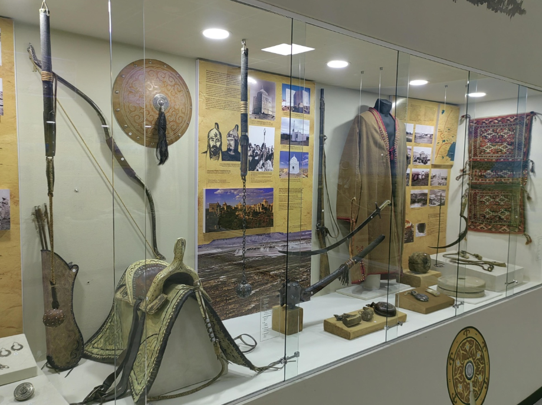
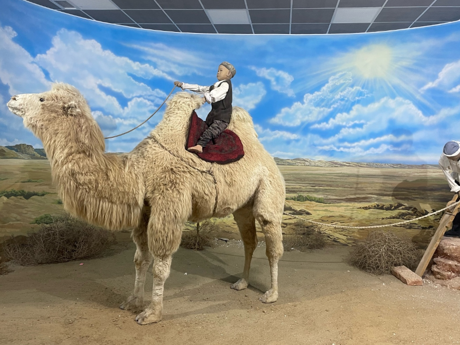

Mangystau Regional History Museum — the center of regional memory
This museum is one of the oldest cultural institutions in the region, housing unique artifacts related to the history, culture, and nature of the Mangystau region. Established in the mid-20th century, the museum has become a center for scientific research and education.
- Founded: 1975
- Collection: over 60,000 exhibits
- Halls: archaeology, ethnography, nature, history
- Location: Aktau, 9th Microdistrict
What to see?
- 🺠Artifacts of nomadic civilizations
- 🖼️ Gallery of old photographs and maps
- 🌿 Installations dedicated to wildlife and flora
- 📜 Documents and household items from the 19th–20th centuries
How to get there?
📠Address: Aktau, 9th Microdistrict, museum building
🚌 Public transport: buses #3, 6, 12
🚕 Taxi available on request
Opening Hours
ⰠMon–Sat: 09:00 – 18:00
🕒 Sunday – closed
🎫 Entry: 500 KZT (adult), 300 KZT (children)
The Mangystau Museum is where history comes to life in detail. Ideal for families, students, and anyone interested in cultural heritage.
PHOTOS


